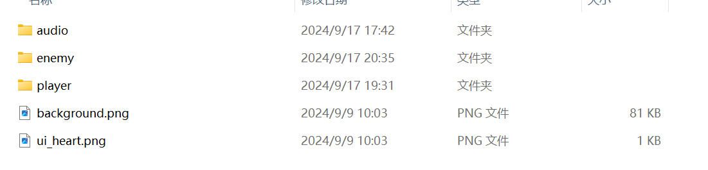

资源管理器的资源管理设置
关于对于资源文件的加载，在之前的项目都是通过硬编码的方式手写出所有路径加载对应的图片和音频资源。
相对于之前，我们使用stl的
#include <string>
#include <graphics.h>
#include <unordered_map>
class ResourcesManager
{
public:
static ResourcesManager* instance();
void load();
Atlas* find_atlas(const std::string& id)const;
IMAGE* find_image(const std::string& id)const;
private:
static ResourcesManager* manager;
std::unordered_map<std::string, Atlas*> atlas_pool;
std::unordered_map<std::string, IMAGE*> image_pool;
private:
ResourcesManager();
~ResourcesManager();
void flip_image(IMAGE* src_image, IMAGE* dst_image, int num_h = 1);
void flip_image(const std::string& src_id, const std::string dst_id, int num_h = 1);
void flip_atlas(const std::string& src_id, const std::string dst_id);
};
我们创建了对应的图集资源池和图片资源池放置对应的美术资产。
由于音频文件在加载的时候会自动附加上对应的名称，所以我们无需创建对应的资源池管理音频资源
同时我么提够了对应的加载函数和翻转函数
资源池注意我们是的value都是指针对象，如果是对象本身可能在放入的时候复制啥的造成内存浪费，所以资源加载后最好都是指针调用，防止资源占用过多内存
接下来我们看一下实现
1.atlas和image的加载
首先我们先创建俩个资源路径结构体，并于我们将路径资源和对应的资源池构建联系，而不是后面遇到一个重新写一个
struct ImageResInfo
{
std::string id; //这是放置到image_pool的key（string）
LPCTSTR path; //这是对应的资源加载路径
};
struct AtlasResInfo
{
std::string id; //这是Atlas_pool的key（string）
LPCTSTR path; //对应的资源加载路径
int num_frame = 0; //由于是散装的图片，我们需要数量来创建对应的atlas
};
然后我们创建对应的信息列表（利用vector），表明我们资源池和加载路径的关系
static const std::vector<ImageResInfo> image_info_list =
{
{"background", _T(R"(resources\background.png)")},
{"ui_heart", _T(R"(resources\ui_heart.png)")},
};
static const std::vector<AtlasResInfo> atlas_info_list =
{
{"barb_break", _T(R"(resources\enemy\barb_break\%d.png)"), 3},
{"barb_loose", _T(R"(resources\enemy\barb_loose\%d.png)"), 5},
};
随后我们便可以在load函数中利用循环遍历信息列表来加载对应的资源以及放入对应的资源池中去
void ResourcesManager::load()
{
for (const auto& info : image_info_list)
{
IMAGE* image = new IMAGE();
loadimage(image, info.path); //加载资源
if (!check_image_valid(image)) //如果对应的image不存在会返回空指针，表明路径错误报错
throw info.path;
image_pool[info.id] = image; //将对应的资源放入资源池中
}
for (const auto& info : atlas_info_list)
{
Atlas* atlas = new Atlas();
atlas->load(info.path, info.num_frame);
for (int i = 0; i < atlas->get_size(); i++) //利用命名规律加载对应的的资源
{
IMAGE* image = atlas->get_image(i);
if (!check_image_valid(image))
throw info.path;
}
atlas_pool[info.id] = atlas;
}
}
2.图片的翻转的注意
显然我们要针对image（多动画帧的一张图片）和atlas（散装动画图集）。
首先二者本质都是对image的翻转
关键是对于连续动画帧的翻转，我们肯定不能将整张图片翻转，不然播放顺序会倒过来，导致我们又需要更改Animation的frame加载或者播放逻辑，所以我们选择翻转的时候选择对应的裁剪区域
void ResourcesManager::flip_image(IMAGE* src_image, IMAGE* dst_image, int num_h)
{
int w = src_image->getwidth();
int h = src_image->getheight();
int w_frame = w / num_h;
Resize(dst_image, w, h);
DWORD* src_buffer = GetImageBuffer(src_image);
DWORD* dst_buffer = GetImageBuffer(dst_image);
//对每个对应的动作裁剪区域翻转
for (int i = 0; i < num_h; i++)
{
int x_left = i * w_frame;
int x_right = (i + 1) * w_frame;
for (int y = 0; y < h; y++)
{
for (int x = x_left; x < x_right; x++)
{
int idx_src = y * w + x;
int idx_dst = y * w + x_right - (x - x_left);
dst_buffer[idx_dst] = src_buffer[idx_src];
}
}
}
}
对应的num_h就是我们对应图片有几个动画帧，显然atlas使用默认为1。
翻转逻辑上，也是使用了IMAGE像素数组缓冲区的逻辑，每一个像素都是BYTE的32位二进制的RGBA构成的。
注意再easyX中，我们的image在new 的时候不会分配储存空间。
所以easyX提供了一个方法，帮助我们分配对应的空间，参数（image*，像素宽度，像素高度）；
所以根据上面的方法我们向上再封装一层
atlas和image的翻转函数，用于资源加载load函数的时候使用
void ResourcesManager::flip_image(const std::string& src_id, const std::string dst_id, int num_h)
{
IMAGE* src_image = image_pool[src_id];
IMAGE* dst_image = new IMAGE();
flip_image(src_image, dst_image, num_h);
image_pool[dst_id] = dst_image;
}
void ResourcesManager::flip_atlas(const std::string& src_id, const std::string dst_id)
{
Atlas* src_atlas = atlas_pool[src_id];
Atlas* dst_atlas = new Atlas();
for (int i = 0; i < src_atlas->get_size(); i++)
{
IMAGE img_flipped;
flip_image(src_atlas->get_image(i), &img_flipped);
dst_atlas->add_image(img_flipped);
}
atlas_pool[dst_id] = dst_atlas;
}
3.对于音频资源的加载
我们在util.h的文件提供了三个音频函数
inline void load_audio(LPCTSTR path, LPCTSTR id)
{
static TCHAR str_cmd[512];
_stprintf_s(str_cmd, _T("open %s alias %s"), path, id);
mciSendString(str_cmd, NULL, 0, NULL);
}
inline void play_audio(LPCTSTR id, bool is_loop = false)
{
static TCHAR str_cmd[512];
_stprintf_s(str_cmd, _T("play %s %s from 0"), id, is_loop ? _T("repeat") : _T(""));
mciSendString(str_cmd, NULL, 0, NULL);
}
inline void stop_audio(LPCTSTR id)
{
static TCHAR str_cmd[512];
_stprintf_s(str_cmd, _T("stop %s"), id);
mciSendString(str_cmd, NULL, 0, NULL);
}
加载的时候对应的音频文件就会产生对应的id，这就是我们目前不使用资源池的原因。
我们使用_stprintf_s（）创建对应的指令信息，然后调用mciSendString的执行对应指令
因此加载音频资源如下即可
load_audio(_T(R"(resources\audio\bgm.mp3)"), _T("bgm"));
load_audio(_T(R"(resources\audio\barb_break.mp3)"), _T("barb_break"));
load_audio(_T(R"(resources\audio\bullet_time.mp3)"), _T("bullet_time"));
利用filesystem对文件资源进行加载
会补充一篇关于filesystem的文章
因为我放弃了使用信息列表所以缺少了资源池的对应关系，所以我将图片或动画文件名字改为资源池对应的id


这样我就可以通过路径中的文件名作为id来上传到资源池管理
fs::path resourceDir = "resources";
// 遍历目录
for (const auto& entry : fs::directory_iterator(resourceDir)) {
if (entry.is_regular_file())
{ // 确保是文件而不是子目录
IMAGE* image = new IMAGE();
loadimage(image, entry.path().wstring().c_str());
if (!check_image_valid(image))
throw entry.path().wstring().c_str();
image_pool[entry.path().stem().string()] = image;
}
else
{
fs::path filePath = entry.path();
if (filePath.filename() == "player")
{
for (const auto& m_entry : fs::directory_iterator(filePath))
{
IMAGE* image = new IMAGE();
loadimage(image,m_entry.path().wstring().c_str());
if (!check_image_valid(image))
throw m_entry.path().wstring().c_str();
image_pool[m_entry.path().stem().string()] = image;
}
}
else if (filePath.filename() == "enemy")
{
for (const auto& m_entry : fs::directory_iterator(filePath))
{
Atlas* atlas = new Atlas();
atlas->load(m_entry.path());
for (int i = 0; i < atlas->get_size(); i++)
{
IMAGE* image = atlas->get_image(i);
if (!check_image_valid(image))
throw m_entry.path().wstring().c_str();
}
atlas_pool[m_entry.path().filename().string()] = atlas;
}
}
else if (filePath.filename() == "audio")
{
for (const auto& m_entry : fs::directory_iterator(filePath))
{
load_audio(m_entry.path().wstring().c_str(), m_entry.path().stem().wstring().c_str());
}
}
}
}
首先遍历resources目录
如果是player，那么是image多帧图片，我们就可以遍历player文件夹的所有图片加载并且将名字作为资源池id
如果是enemy我们重载了atlas的load（）函数，接受filepath作为参数，加载对应的一个动画
void load(fs::path filePath)
{
img_list.clear();
int num = std::distance(fs::directory_iterator(filePath), fs::directory_iterator{});//计算帧数
img_list.resize(num);
int i = 0;
for (const auto& m_entry : fs::directory_iterator(filePath))
{
loadimage(&img_list[i], m_entry.path().wstring().c_str());
i++;
}
}
如果是单独的图片，那么就直接加载放进资源池
如果是audio，则遍历加载和图片同理
LPCTSTR
stringwstring
char
w_char
ANSL
Unicode
这些关系可以写一下